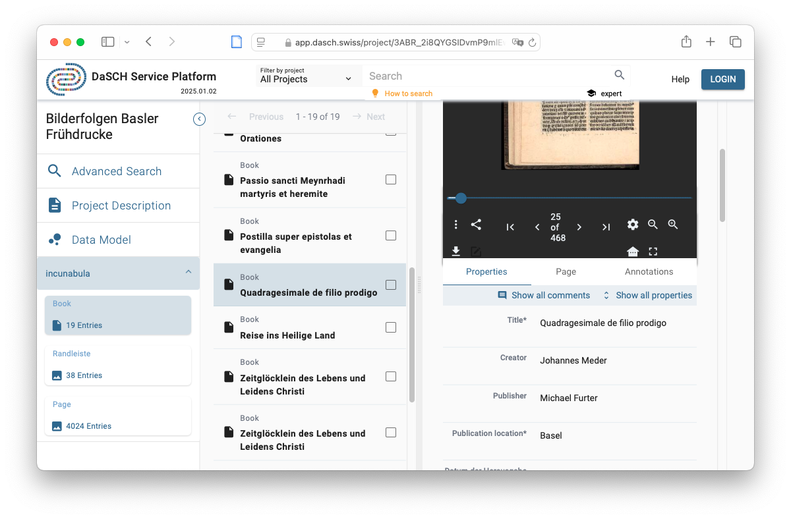
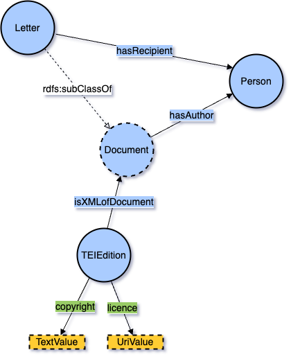
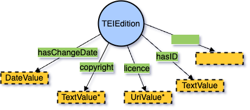
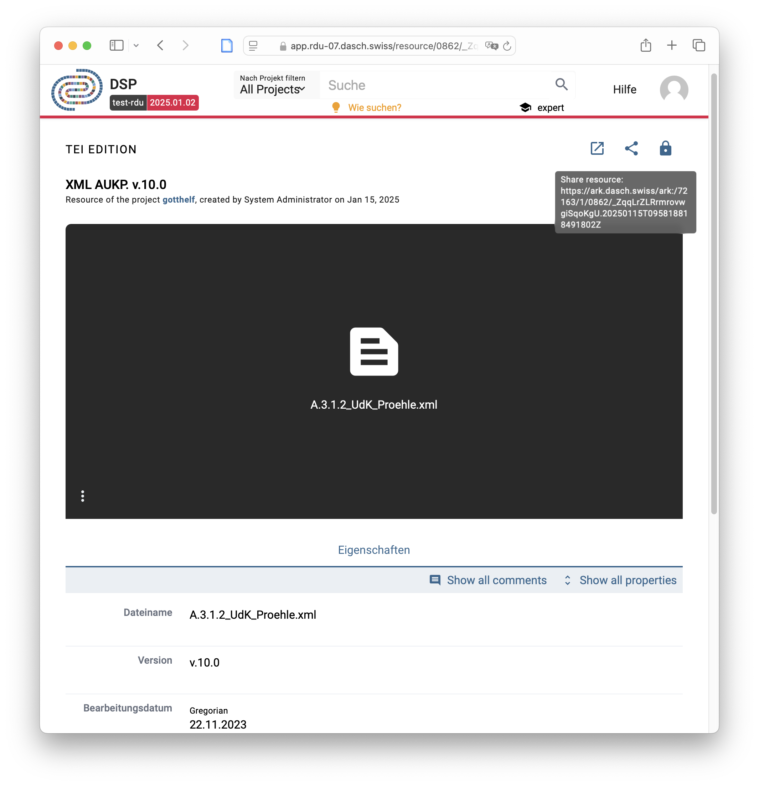
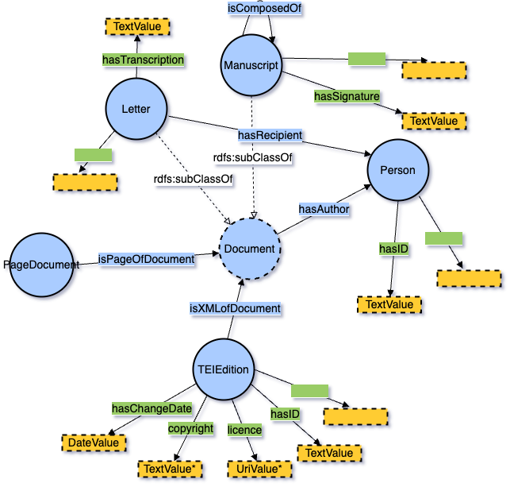
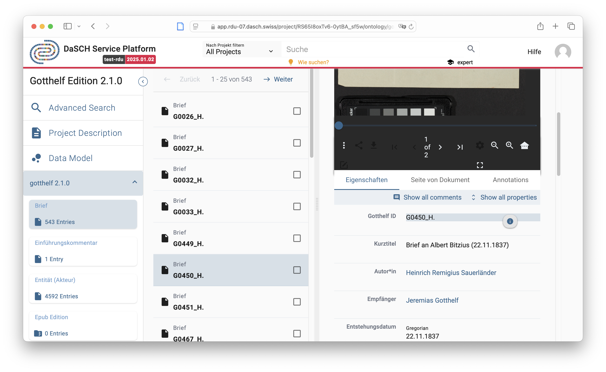

Long-term archiving of digital edition data in the DaSCH Service Platform (DSP)
José Luis Losada Palenzuela
DaSCH
Zusammenführen-Vernetzen-Analysieren: Innovative Nachnutzung von digitalen Editionsdaten, 30.01.2025, Universität Zürich
UZH
http://editio.github.io/presentations/editions-dasch
## ToC - DaSCH Overview - Data Models - Granularity - Example of an edition
## What is DaSCH? - DaSCH - Swiss National Data and Service Center for the Humanities - National infrastructure for Humanities’ research data - Open data repository and simple virtual research environment - Repository for long-term preservation and reuse of research data
## Characteristics of DSP #### DaSCH Service Platform (DSP) - Focus on text data and bitstream data - Persistent identifiers (ARKs) not only at dataset level but also at object level - Editing of data possible at any time - Providing access to data through APIs - Display of data and search in generic web application: https://app.dasch.swiss
 <br> <span class="fuente"><a href="https://ark.dasch.swiss/ark:/72163/1/0803/f6pSYFILX1OT1uqXBXotnA8">https://ark.dasch.swiss/ark:/72163/1/0803/f6pSYFILX1OT1uqXBXotnA8</a></span>
## Digital Scholarly Editions - TEI-XML's role as the core of digital scholarly editions - Reductionist, as it omits visualization and publication - Every DSE has implicit or explicit a data model
## DSP Specific Requirements #### How data is represented in DSP - RDF-based representation - **Data Model** (classes and properties)


## Simple Data Model - Archiving the XML files with the desired basic metadata - What do I have: - Data export for external tools and systems: xml download - Direct citacion at object level via ARK - Versioning if decided to track the versions: `<change>`



## Conclusion - Archive granularity up to the project - Archive XML with selection of data of interest - Content is still preserved in the XML - Downloads and persistent identifiers
Search for more projects at DaSCH Metadata Browser <br> https://meta.dasch.swiss <br> <br> DSP source code and documentation <br> https://github.com/dasch-swiss <a style = "border-bottom: none" href="http://creativecommons.org/licenses/by-sa/4.0/"><img class="licencia" alt="License Creative Commons" src="https://i.creativecommons.org/l/by-sa/4.0/80x15.png"></a>